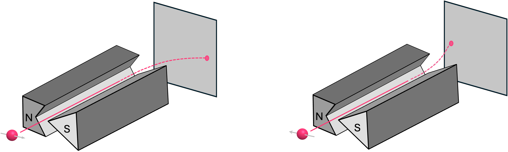

Qubits and Quantum Circuits#
Quantum computers, or more precisely, quantum processing units (QPUs), are devices that exploit quantum-mechanical effects to perform certain computations at a much faster rate than conventional (classical) computers. In order to understand how these devices work, we must familiarize ourselves with the quantum phenomena that enables this added computational advantage. In particular, we must understand the concepts of superposition, entanglement and quantum interference.
For this reason, in this chapter we will follow a bottom-up approach. Instead of starting our discussion about quantum computing by describing how QPUs can outperform classical devices in certain tasks, we will first introduce the concept of a qubit by showing how this fundamental element of computation emerges from some of the physical properties of particles like electrons.
1. Quantum Bits (Qubits)#
From a computational standpoint, qubits are a generalization of classical bits and are the fundamental unit in quantum computing. There are many different ways in which we can introduce the concept of a qubit. Here, we will follow a relatively intuitive approach by looking at how electrons behave under the influence of an external magnetic field.
1.1 The Spin of an Electron#
One of the fundamental properties of electrons is that they have an intrinsic angular momentum. This property is commonly known as spin, even though particles are not really spinning. The spin of an electron can be deduced experimentally by using what is known as a Stern-Gerlach apparatus. This device consists of two magnet poles shaped in a way such that the magnetic field between them is non-uniform, having a higher intensity at the top where the magnet is sharper:

Therefore, if an object with a magnetic moment, like a tiny bar magnet, is sent into this device along the \(y\) direction, it will experience a force in the vertical \(z\) direction that will cause it to deflect upwards or downwards. A bar magnet with its north pole pointing up will deflect upwards. On the other hand, a bar magnet with its north pole pointing down will deflect downwards:

If designed correctly, a bar magnet with its north pointing in the \(\texttt{+}x\) (or \(\texttt{-}x\) direction) should experience an equal force from the top and bottom magnet poles, and therefore should travel in a straight path:

More generally, the force experienced by the bar magnet depends on the angle \(\theta\) between its magnetic moment (i.e., where its north pole points to) and the direction of the external magnetic field. Therefore, if we were to perform this experiment for bar magnets with varying angles in the magnetic moment, the z-axis landing location on the back screen will vary between where the landing position of the up-pointing and down-pointing magnets, and will be dependent on the angle \(\theta\).

Now, because electrons are charge particles, their intrinsic angular momentum (spin) expresses itself as a magnetic moment just as we have for a tiny bar magnet. So, if we were to replace the magnets with electrons in the experiment above\(^*\), the expectation is that we should see the exact same behavior of electrons being deflected in the \(z\) direction as a function of the angle between the electron’s magnetic moment and the direction of the external magnetic field.
Experimentally, this has been confirmed for electrons with their spin pointing in the \(\texttt{+}z\) and \(\texttt{-}z\) directions:

However, for the case of an electron with their spin pointing in, for example, the \(\texttt{+}x\) (or \(\texttt{-}x\)) direction, something interesting happens. Instead of traveling in a straight line (like in the case of the bar magnet), the electron ends up deflecting upwards or downwards each with \(50 \%\) probability:

In other words, it has been verified that an experiment where the electron is prepared to have spin in the \(\texttt{±}x\) direction is performed many times, roughly half of the time the electron deflects upwards, and half of the time it deflects downwards and never somewhere in between.
The reason why electrons show this probabilistic behavior is partially related to what is perhaps the most debated question in all quantum mechanics: the measurement problem. Since discussions about the measurement problem are outside the scope of this textbook, we will simply use the empirical evidence from these experiments to build a model for how to describe these particles.
So, given this observed behavior, it is then very tempting to assign a probability vector (like the ones described in the previous chapter) to describe the state of the spin of an electron, where to first element in the vector represents the probability of the electron being spin up, and the second element the probability of being spin down:
Clearly, this works for the specific case of the Stern-Gerlach experiment we described above, but does it work in general?…
Now, for an electron with spin pointing in the \(\texttt{+}x\) direction, the probability of measuring is spin up and spin down is \(1/2\) each, so we have:
But what about an electron with spin in the \(\texttt{-}x\) direction? Well, this would give us the exact same vector as above, which means there would be no way of distinguishing between two clearly different states:
One could argue that, perhaps, there is just simply no way to experimentally distinguish between electrons with spins along the \(\texttt{+}x\) and \(\texttt{-}x\) directions. However, it is not difficult to see that there is really nothing special about setting up the Stern-Gerlach apparatus with its varying field along the \(z\) axis. We can perfectly rotate the device so the field is now in the \(x\) direction. And, if we now send electrons with their spin along the \(\texttt{+}x\) (or \(\texttt{-}x\)) axis, we will see them deflect to the right (or to the left) accordingly, which shows that there is indeed a way to experimentally tell these are two different states:
Furthermore, we can also show that, mathematically, using probability vectors to describe spins simply doesn’t work. An interesting fact about using vectors is that we can write one particular state as a linear combination of other states. For example, an electron with spin pointing in the \(\texttt{+}x\) direction can be written as a linear combination of \(\vec{s}_{\texttt{+}z}\) and \(\vec{s}_{\texttt{-}z}\):
In words, this expression is simply saying that an electron in the \(\texttt{+}x\) can be interpreted as either having an electron with spin in the \(\texttt{+}z\) direction or in the \(\texttt{-}z\) direction, each with \(50\%\) probability. By symmetry, we also know that if we send spin-up electrons through a rotated Stern-Gerlach apparatus, we will see them deflecting left or right, each with \(50\%\) probability:

This means that, for an electron with spin pointing in the \(\texttt{+}z\) direction, we should also be able to write it as a linear combination of the vectors \(\vec{s}_{\texttt{+}x}\) and \(\vec{s}_{\texttt{-}x}\):
But what happens if we replace \(\vec{s}_{\texttt{+}x}\) and \(\vec{s}_{\texttt{-}x}\) with the vector representation? Ideally, we should recover the vector expression for \(\vec{s}_{\texttt{+}z}\), but this is what we get instead:
which is clearly not consistent with our original definition for \(\vec{s}_{\texttt{+}z}\):
This contradiction basically shows that probability vectors are not the right tool to represent how the spin of an electron behaves, so we need an alternative description. So let us now try to intuit how the mathematical object that describes the angular momentum of an electron would have to look like to match the results from these experiments.
1.2 From Probabilities to Probability Amplitudes#
A key observation from the probabilistic model we proposed above is that, since the components \(P_{\texttt{+}z}\) and \(P_{\texttt{-}z}\) of the vector \(\vec{s}\) are probabilities (which are numbers between \(0\) and \(1\) and must always add up to \(1\)), there is simply no way we can recover the original vector that describes \(\vec{s}_{\texttt{+}z}\) by using linear combinations of other probability vectors. This is because the second entry in \(\vec{s}_{\texttt{+}z}\) is a \(0\), so there are no two positive numbers that can add up to it (unless they are both \(0\)). What this implies is that, for our maths to work, we need to also allow negative entries in our vectors. However, since these vectors still need to describe probabilistic experimental results and probabilities cannot be negative, we need a new rule that tells us how to relate these new vector elements to probabilities.
Well, a simple recipe to turn negative numbers into positive numbers is to square them, so we could propose to have the elements of our vectors to be numbers that when squared turn into the probabilities we see in experimental results! It is not hard to see that, a vector that would work in the case of the Stern-Gerlach experiment is given by:
where \(s_0\) and \(s_1\) are called the probability amplitudes of vector \(|s \rangle\) and which, when squared, represent the probabilities of measuring the electron to be spin up or spin down:
Also, notice how we have switched back to using the bra-ket notation for our vectors. This is because, as we pointed out in a previous chapter, the vector \(|s \rangle \) belongs to a family of vectors (a vector space) with some specific properties, one of them being that the sum of their components squared must be equal to \(1\)\(^{\dagger}\), but we will go into these details in a later chapter.
The key here is that, unlike what we had for the probability vector \(\vec{s}\), this new definition does align with the observations of how the spin of electrons behaves. To see this, let’s reconsider an electron with spin pointing in the \(\texttt{+}z\) direction using this new definition:
So far, this vector looks identical to what we had defined for \(\vec{s}_{\texttt{+}z}\), but this is simply because \(P_{\texttt{+}z} = s_0^2 = 1^2 = 1\), and \(P_{\texttt{-}z} = s_1^2 = 0^2 = 0\).
Similarly, for an electron with its spin pointing the \(\texttt{-}z\) direction we have:
which, again, identical to \(\vec{s}_{\texttt{-}z}\) because in this case \(P_{\texttt{+}z} = s_0^2 = 0^2 = 0\), and \(P_{\texttt{-}z} = s_1^2 = 1^2 = 1\).
But now let’s look at the vector of an electron with spin in the \(\texttt{+}x\) direction. Since we need to satisfy \(s_0^2 = s_1^2 = 1/2\), we can arbitrarily choose \(s_0\) and \(s_1\) to simply be the positive square root of \(1/2\):
And it is worth pointing out, that we can write this down as a linear combination of the vectors representing spin in the \(\texttt{+}z\) and \(\texttt{-}z\) directions:
Now, to find the probability amplitudes of the vector for a spin in the \(\texttt{-}x\) direction (denoted as \(|s_{\texttt{-}z} \rangle\)), let’s remember that the main motivation for us to switch from probabilities to probability vectors was that we needed to satisfy that \(|s_{\texttt{+}z} \rangle\) can also be expressed as a linear combination of \(|s_{\texttt{+}x} \rangle\) and \(|s_{\texttt{-}x} \rangle\):
and since we have already defined what \(|s_{\texttt{+}z} \rangle\) and \(|s_{\texttt{+}x} \rangle\) are, we can simply replace them in the expression above and find what \(s_0\) and \(s_1\) for the vector \(|s_{\texttt{-}z} \rangle\) should be:
we not only want to satisfy that its components satisfy \(s_0^2 = s_1^2 = 1/2\)
As pointed out previously, we can express these vectors as linear combinations of other vectors. So, for the case of \(|s_{\texttt{+}x} \rangle\) we have:
And, as mentioned before, due to the symmetry of rotation the experiment have, we should be able to the same for \(|s_{\texttt{+}z} \rangle\) in term of \(|s_{\texttt{+}x}\rangle\) and \(|s_{\texttt{-}x}\rangle\) and recover its original definition:
We have managed to find a model that describes not only the probabilistic results for the spin of an electron when measured along the \(z\) direction, but that also preserves the original definitions of the spin vectors when the apparatus is oriented at other angles.
So, from what we observe in this experiment, it can be concluded that the spin of an electron can be described by a vector of the form:
where \(s_0\) and \(s_1\) are real numbers (\(s_0, s_1 \in \mathbb{R}\)), whose values squared represent probabilities and must therefore add up to 1:
Now, unfortunately, this is not the whole story. This description works well in the case of the Stern-Gerlach experiment because electrons are traveling along the \(y\) axis, and we are only concerned about their orientation in the \(x/z\) plane. However, the spin of an electron can also point along the \(\texttt{+}y\) and \(\texttt{-}y\) axes. So how would we express these state vectors and still preserve all the properties we have described so far?
\(^*\)Technically, we can’t really perform the standard Stern-Gerlach experiment using just electrons. Since electrons are charged particles, accelerating them into the apparatus will cause a classical Lorentz force that will dominate over the effect the magnetic field has on spin. Instead, in the original experiment, silver atoms where used because they are electrically neutral but still have the same spin behavior as electrons (spin-1/2) due to the presence of an unpaired electron in the outermost orbital. (go back)
\(^{\dagger}\)Later we will see that, more generally, our vector components are complex numbers, so instead of just squaring them to find probabilities we must find the value of their norm squared, i.e., \(|\alpha|^2 = \alpha \cdot \alpha^*, \, \alpha \in \mathbb{C}\). (go back)
FEELS LIKE WE’RE PULLING THIS OUT OF A HAT! WHY THIS RULE OF SQUARING NUMBERS? WELL BECAUSE IT WORKS. WE ARE TRYING TO CONSTRUCT A MODEL THAT FITS OUR DATA